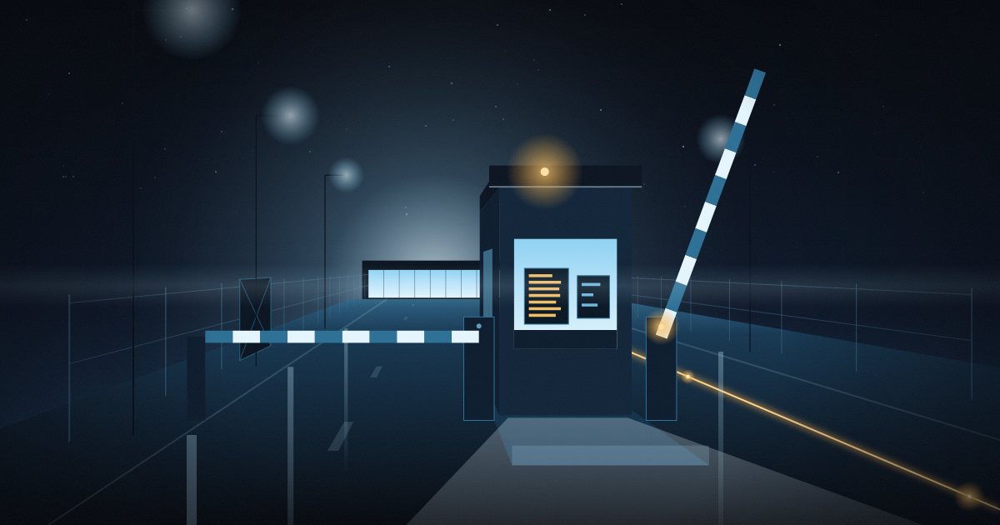
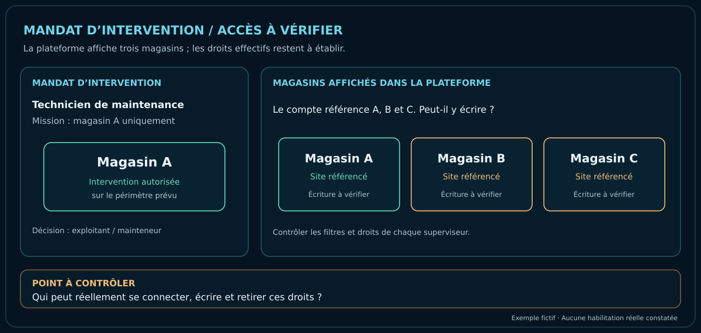
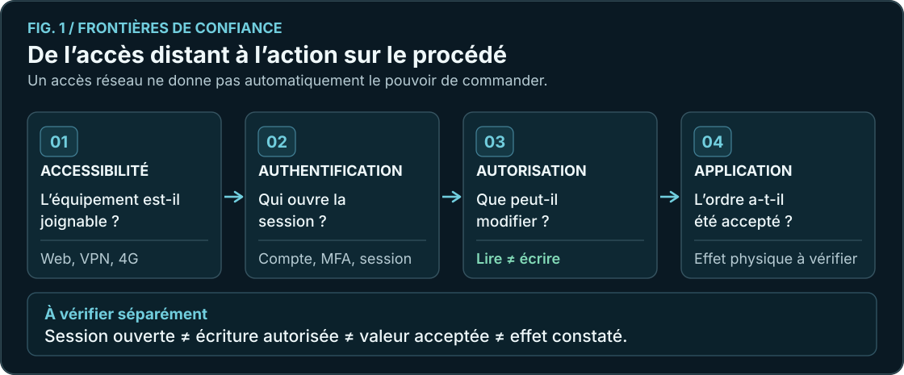

Cybersécurité du froid commercial : qui peut agir sur vos installations, et jusqu'où ?
Accès distants, droits de maintenance et conséquences possibles sur le fonctionnement des installations frigorifiques.
Sur cette page
Dans un magasin alimentaire, les installations frigorifiques assurent la conservation des produits. Leur fonctionnement repose sur des équipements de régulation, des systèmes de supervision et des dispositifs d'alarme qui permettent aux professionnels du froid de surveiller les températures, d'ajuster les réglages et d'intervenir en cas d'anomalie.
Ces équipements sont de plus en plus accessibles à distance pour faciliter la maintenance et la surveillance des installations. Mais ces accès soulèvent une question essentielle : qui peut réellement agir sur les équipements frigorifiques, avec quels droits et quelles conséquences possibles sur leur fonctionnement ?
Les compromissions de systèmes de supervision Danfoss et Copeland/Dixell signalées par le CERT-FR en octobre 2026 rappellent l'importance de maîtriser ces accès. Elles ne suffisent toutefois pas à établir les mécanismes exacts de compromission ou les conséquences rencontrées sur chaque installation.
Pour comprendre les enjeux, nous partirons d'une situation fictive : un professionnel chargé de la maintenance d'un magasin découvre que son compte lui donne également de la visibilité sur d'autres établissements. Cette situation ne prouve pas qu'il puisse agir sur leurs équipements. Elle invite à examiner les chemins d'accès, les permissions, les commandes possibles et les protections qui en limitent la portée.
L'objectif de cette analyse est de relier les accès numériques aux conséquences opérationnelles : continuité de la production frigorifique, maîtrise des températures, fonctionnement des alarmes et capacité d'intervention.

1. Un compte de maintenance, trois magasins
La mission du frigoriste concerne le magasin A. La plateforme affiche pourtant A, B et C dans le périmètre de son compte. Cette liste est un indice, pas la preuve d'un droit de modification.
Le scénario suppose une plateforme de maintenance multisite, sans présumer de son architecture technique. Selon les installations, l’accès à chaque superviseur peut exiger une authentification supplémentaire. Le compte peut disposer d'une simple vue sur les températures de B et C. Il peut aussi donner accès à une session de maintenance, selon les habilitations attribuées. Les permissions propres aux superviseurs peuvent encore restreindre les opérations.

Qui a créé ce compte ? Qui lui a associé les trois magasins ? Qui peut étendre ses droits ou les retirer après un changement de mainteneur ? L'exploitant autorise l'intervention, tandis que les comptes et les accès peuvent être administrés par plusieurs entreprises.
Le pouvoir d'un compte dépend aussi de celui qui l'administre. Un identifiant partagé, un compte technique ou une plateforme multisite peuvent concentrer une autorité plus large que la mission confiée au technicien. La portée se vérifie sur chaque site, avec les responsables des accès.
2. De l'accès à la commande : où s'arrête le chemin ?
Pour le magasin B, la présence d'une entrée dans la plateforme ne répond qu'à une partie du problème. Il faut examiner le parcours complet, du compte jusqu'au régulateur.
Quatre contrôles permettent de déterminer si une commande peut parvenir au régulateur et être acceptée :
- Joignabilité : le compte dispose-t-il d'un chemin réseau jusqu'au superviseur B ?
- Authentification : peut-il ouvrir une session sur cet équipement ?
- Autorisation : cette session permet-elle de lire, de modifier ou de commander ?
- Application : un régulateur accepterait-il la commande concernée ?

Une règle de pare-feu peut bloquer la session vers B. Le superviseur peut limiter le compte à la lecture. Le régulateur peut refuser une écriture. Ces contrôles doivent être vérifiés séparément.
Si le droit d'écriture demeure inconnu, la possibilité de commande reste ouverte à l'examen. Si le filtrage bloque effectivement ce trajet, ce chemin s'arrête là, dans les conditions vérifiées. D'autres chemins peuvent exister, sans être présumés.
Les notices décrivent les fonctions des produits. Les versions, les comptes, les flux et les réglages d'un magasin déterminent celles qui sont réellement accessibles. Une cinquième analyse est nécessaire : établir ce que la commande acceptée produit effectivement sur l’installation. Son acceptation ne prouve, à elle seule, ni une variation de température ni un dommage pour les denrées.
3. Quelles conséquences sur le froid et les alarmes ?
Le magasin doit produire le froid, le réguler, mesurer les températures, recevoir les alertes et permettre une intervention à temps. Une action numérique prend de l'importance lorsqu'elle affecte l'une de ces fonctions.
Dans le manuel du régulateur Dixell XR60CX, SEt désigne le point de consigne et US sa limite supérieure. Cette borne encadre un réglage ; elle ne constitue pas, à elle seule, une protection indépendante du procédé. Si une même autorité peut modifier les deux paramètres, elle peut relever la limite en même temps que la consigne. Cet exemple illustre une dépendance entre réglages. Il ne démontre aucun droit d’écriture à distance depuis le compte de notre scénario. Une telle possibilité doit être établie pour le modèle, la version, les liaisons et les permissions de chaque installation.
Une modification de dégivrage peut agir au cycle suivant. Une consigne acceptée peut aussi rester sans effet immédiat sur les produits. Les protections locales, la production frigorifique et l'inertie thermique influencent le comportement du procédé. La conséquence pour les denrées dépend notamment des températures réellement subies et de leur durée.
Le même raisonnement s'applique aux alarmes du magasin B. Une dérive doit être mesurée, puis une alarme déclenchée, transmise, reçue et prise en charge. Une sonde défaillante, un seuil inadapté, un mode maintenance, une liaison coupée ou une notification ignorée interrompent des étapes différentes.
Le compte de maintenance peut-il modifier un seuil ou un destinataire d'alarme ? La réponse nécessite de consulter les droits et les paramètres effectifs. Si une alarme manque, le frigoriste vérifie les mesures et le comportement local ; le télésurveilleur confirme la réception et la prise en charge ; l'équipe cyber examine les modifications suspectes.
Une alarme affichée sur le superviseur ne garantit pas qu'une personne l'ait reçue. Un essai autorisé, convenu avec l'astreinte, permet de vérifier le parcours complet. Les mesures de protection des denrées relèvent de l'exploitant et des professionnels du froid.
4. Où les protections bloquent-elles l'action ?
Revenons à B et C. Trois vérifications peuvent réduire fortement la portée du compte.
Le filtrage réseau peut interdire toute session vers leurs superviseurs depuis ce chemin de maintenance. Les droits applicatifs peuvent limiter le compte à la consultation. Les régulateurs et protections locales peuvent refuser une commande ou en limiter les effets.
Ces enjeux de télémaintenance, de séparation des accès et de gouvernance se retrouvent aussi dans certaines architectures de gestion technique centralisée (GTC) ou de gestion technique du bâtiment (GTB). Le guide ANSSI consacré à la GTB/GTC fournit un cadre plus large ; il ne décrit pas spécifiquement tous les équipements de supervision frigorifique.
Il faut également examiner les protections du service rendu. Une régulation locale peut continuer lorsque la supervision est indisponible. Une transmission d'alarme indépendante peut avertir l'astreinte malgré une panne du chemin principal. Leur efficacité dépend des sondes, seuils, alimentations, communications et personnes réellement mobilisables.
Les résultats comptent autant que les inquiétudes initiales. Un filtrage testé peut écarter le chemin vers B ; des permissions en lecture seule peuvent exclure les modifications envisagées ; une alarme indépendante reçue peut préserver la capacité d'intervention. Chaque conclusion reste limitée aux conditions vérifiées.
Une protection qui fonctionne change le scénario. Elle peut empêcher une action, en réduire la portée ou laisser au magasin le temps de réagir. Sa modification doit aussi préserver la télémaintenance et la surveillance nécessaires à l'exploitation.
5. Quelles décisions pour protéger les magasins ?
La plateforme affiche A, B et C. À la fin des vérifications, trois situations appellent des décisions différentes.
Si B et C sont seulement consultables alors que la mission porte sur A, l'exploitant et le prestataire peuvent examiner l'utilité de ces accès et les restreindre. La vérification confirme les droits restants et les besoins de maintenance.
Si un droit de modification est effectivement utilisable sur B ou C sans justification opérationnelle, il faut le réduire, identifier qui peut le rétablir et vérifier les restrictions sur les superviseurs concernés.
Si les alarmes de plusieurs magasins dépendent d'un même service ou d'un même compte, l'exploitant doit connaître les conséquences de cette dépendance et les moyens disponibles en cas de panne ou de compromission. Une voie de secours doit être testée jusqu'à la personne d'astreinte.
Ces décisions exigent des preuves proportionnées : configurations de comptes, règles réseau, droits des superviseurs, paramètres relus et essais autorisés. Les faits observés, les fonctions documentées, les informations rapportées, les hypothèses et les inconnues doivent rester distingués. Aucun test actif sur une installation tierce ne se justifie sans autorisation.
Une hypothèse écartée évite une correction inutile. Une dépendance confirmée indique où concentrer les moyens.
Conclusion
La mission du technicien concerne un magasin. Son interface en affiche trois. Entre ces deux faits se trouvent des chemins réseau, des droits, des commandes possibles et des protections à vérifier.
L'enjeu apparaît lorsqu'on suit ces relations jusqu'au froid : quels réglages pourraient changer, quelles alarmes pourraient manquer, quelles fonctions continueraient à protéger les équipements et les denrées ?
La décision repose sur des capacités établies et des conséquences concrètes : limiter les droits injustifiés, vérifier les protections et préserver la capacité d'intervention.
Pour aller plus loin
- Sécuriser sa supervision frigorifique : guide pratique pas à pas.
- Cyber-résilience du froid commercial : que reste-t-il quand la supervision n'est plus fiable ?.
Sources et portée
- CERT-FR — Incident ciblant les contrôleurs à distance de réfrigération, CERTFR-2026-ALE-012, 16 octobre 2026.
- ANSSI — Recommandations de sécurité relatives à la GTB/GTC.
- Dixell/Copeland — XR60CX, manuel français.
- Copeland/Dixell — XWEB PRO, manuel d'exploitation.
- Danfoss — AK-SM 800A, guide utilisateur.
- NIST — Guide to Operational Technology (OT) Security, SP 800-82 Rev. 3.
Portée : analyse documentaire et scénario multisite fictif. Les droits, liaisons, commandes et protections dépendent des modèles, versions et configurations. Aucun mécanisme décrit ici n'est attribué aux auteurs des incidents d'octobre 2026. Aucun essai sur une installation tierce n'est revendiqué.
Version 2.6 — 3 novembre 2026. © 2026 lxrider — Tous droits réservés pour le texte original.